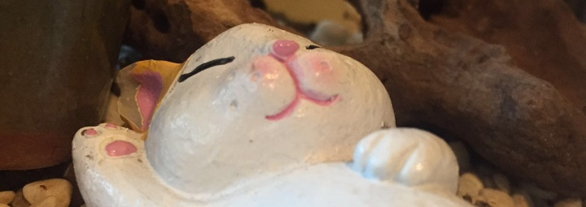

旅途准备小记
闲谈
我匆匆忙忙的想在一月份安排一场去京都的旅行，也就是现在。这是第一次我自己一个人安排一趟旅程，所遇之事让我对以前有了一些反思。
1.机会是留给有准备的人
某位同学说得对，平时没有去留意特价的机票，在想要出门的时候遇到特价机票那是很难的。
2.会选择穷游的一般不会是小白玩家
我只去过两个东南亚国家，而且还是在某位同学的照顾下出行的，所以我其实也是个小白旅行者。我准备出门的这段时间还是赶到挺焦虑的，对很多事情不知深浅，我甚至没有托运行李的经验。所以我希望在预算允许的范围内能让自己的旅途不太波折，先以一个简单模式开始。记得当初在一家在线旅行公司工作的时候，大家都在思考我们的核心用户是什么人，有的人说我们应该先招揽资深的穷游爱好者。去旅行就像修炼一门技艺，在修炼的路上有不同程度的学生。不用怎么计划行程而能玩好的人，算是高级玩家。也有一些高级玩家能精确细致的做出教科书般行程计划。穷游其实需要出行的人对路上的事情有更深刻的理解和经验，也懂得怎样应对各种情况，个人觉得更适合玩得比较溜的人。当然，有心的旅行者都会在这条路上不断前进。对于一个初次旅行的人来说，大事不定，小事不稳。
所以为谁服务这个问题没有对错，只是一个选择。有时候我们在做设计的时候会说我们把一个东西的选择丢给了用户，有时候的确是这样的。但有的时候，确实是不同的人需要不同的帮助，我们应该在这件事情上有一个更理性的判断。
3.小事情不上心的态度要改了
我对一些小的事情，虽然心里知道，却没有上心去关注。比如明知道要尽快递交签证材料，却不去查地税局的工作时间，直接让我浪费了两天时间（要是最后办事不成，我就只能恨自己了）。这种做事的态度不好，对事情没有把握和计划，无论是工作还是生活都是无益的。
（匆忙上线，错字错句请谅解）
10th Jan 2016